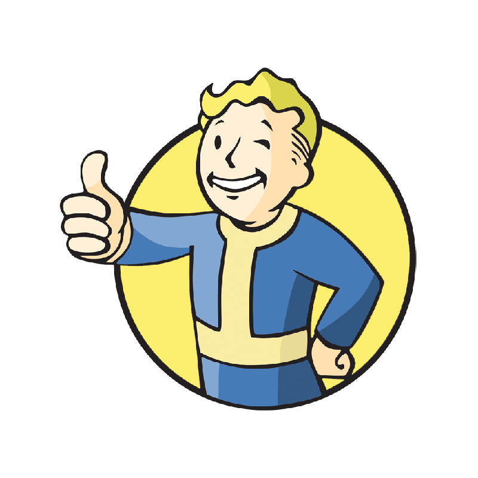

HP 80%
RAD 20%
LVL 07
CAPS 1250
TERMINAL DA VAULT-TEC
NOVA ATUALIZAÇÃO
Facções atualizadas
Sistema de atributos S.P.E.C.I.A.L adicionado às facções.
> CLIQUE PARA ACESSAR
VAULT-BOY STATUS: ONLINE
Sistema de atributos S.P.E.C.I.A.L adicionado às facções.
> CLIQUE PARA ACESSAR